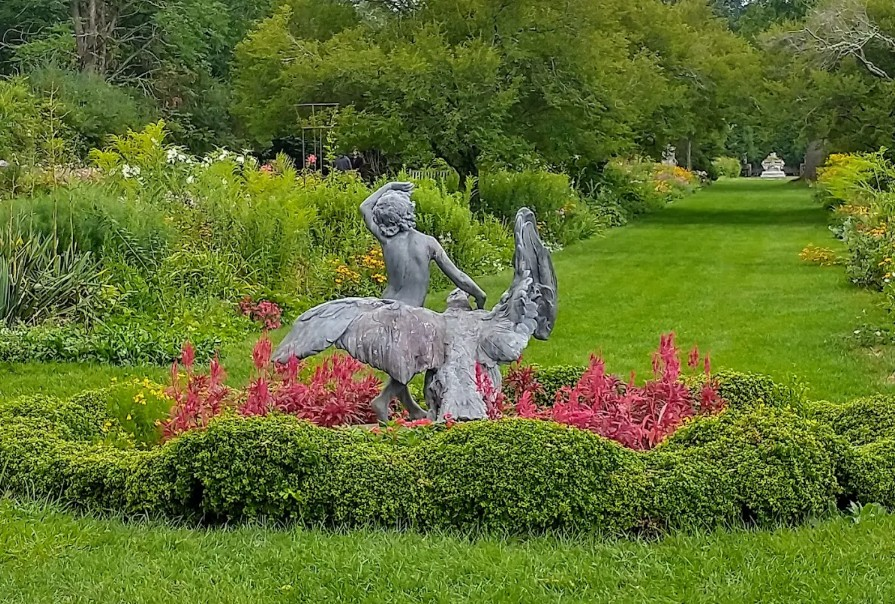
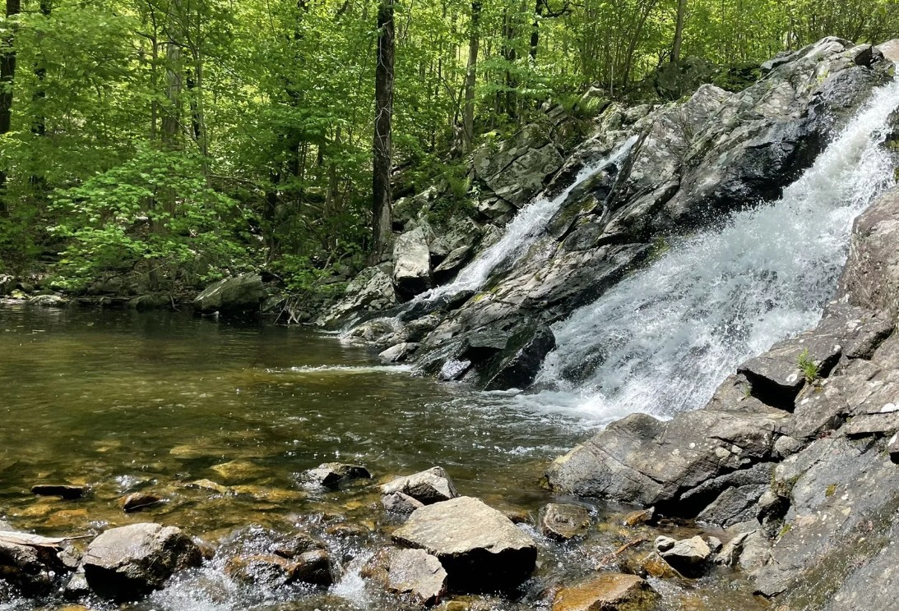
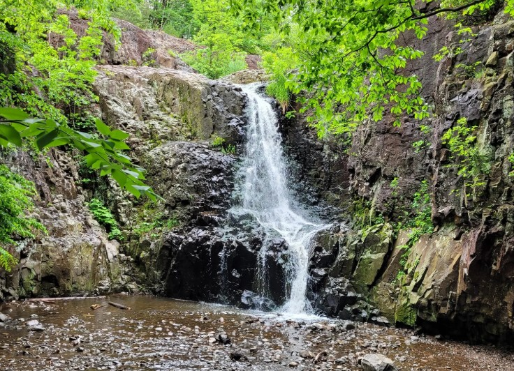
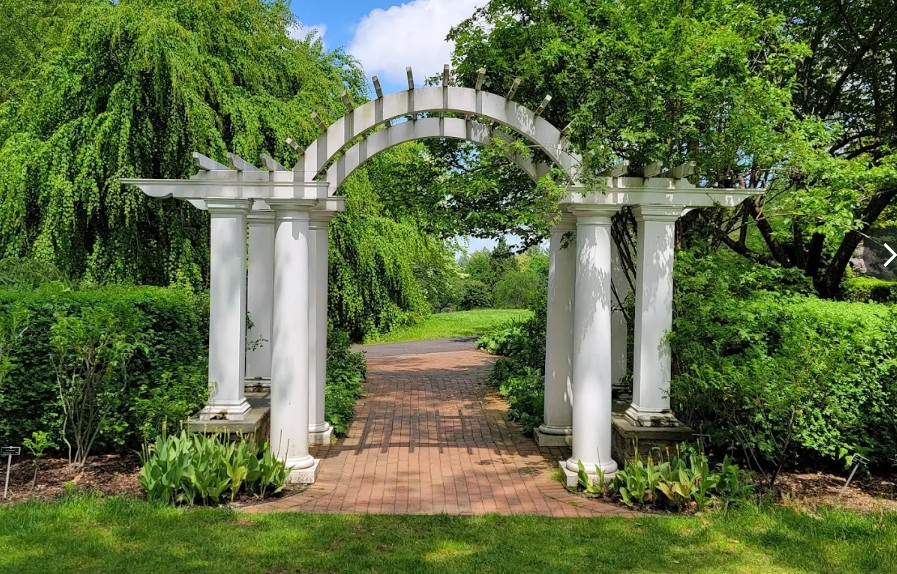
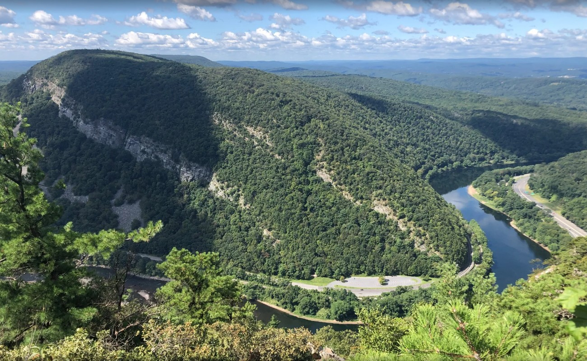
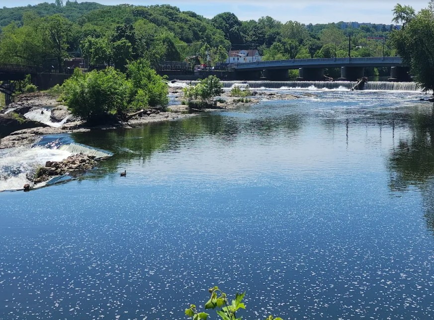
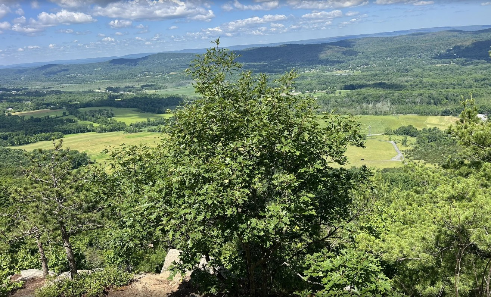

Explore New Jersey's Best Sights
New Jersey is filled with beautiful parks, gardens, and scenic spots waiting to be explored. Here you'll find some of my
favorite sights and outdoor destinations across the state—perfect for hiking, relaxing, and discovering the natural beauty
New Jersey has to offer. Whether you love waterfalls, gardens, or panoramic views, there's something here for everyone!

Jersey Botanical Garden: Take a nice, relaxing walk in the beautiful gardens and trails.

Chikahoki Falls: If you are looking for beautiful waterfalls this is the trail for you!

Hemlock Falls: A 5.8 mile trail that's family and dog friendly. Has beautiful waterfalls and lakes along the trail.
Liberty State Park: Check out this historical site that has iconic views of the Statue of Liberty and NYC skyline.

The Frelinghuysen Arboretum: A beautiful big green lawn that is perfect for picnics during the spring. Note: no pets allowed!

Mount Tammany: Visit this challenging but beautiful 3.8 mile hiking spot with stunning Delaware Water Gap views.

Paterson Great Falls: Visit this national state park that has beautiful waterfalls and walking paths.

Stairway to Heaven: Visit this 2.8 mile trail to push past your limits. Make sure to bring plenty of water and snacks!